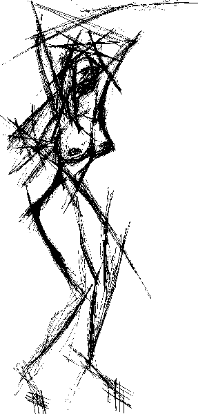
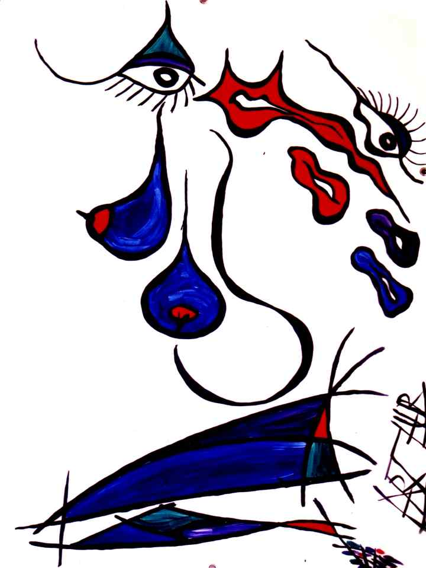

ContactElizabeth@thescars.comElizabeth Kaskens Van Bossestraat 48 2613 CR Delft Holland Phone 0031.6.14.74.84.66 |  |
RoteRec Founder
Elizabeth studied economics and medicine,promoted on a thesis:
"VanGogh: one-man $4.5B production."
Runs an insane intensive care unit at Colchester,
as Chief Excutive Psychiatrist,
is parttime professor Arts Marketing at the
University of WoolWoodWhare,
unhappily married, deeply in love with a
contructionworker, planning a divorce within three years,
loves soccer, where she dug up that hug,
current research interests include the relation
between arts, erections and
constuctionworkers, by the way she has a son, who,..
....
yes, plays soccer in the team with a c..workdaddy.
Rehearsals ArthurX and the Scars, 2012 in the Kabelfabriek, Club DNA, Kunsthal Delft
Click on the photo for music video: Hooga

Flipping Lips, acryl on canvas, size :100x150cm



Dripping Teens Party, acryl on canvas, size :100x150cm


After a shooting incident at club DNA our rehearsal place shut down, we are looking for a new place.